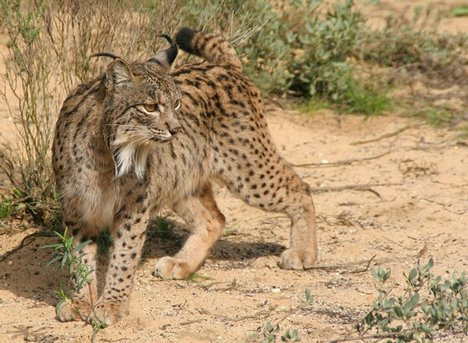

|
Introducere Repere geografice Clima Geografia politică Vegetația Fauna Relieful Rețeaua hidrografică |

Fauna in SpaniaFauna prezintă un grad ridicat de diversitate, lucru care se datorează în mare parte următtorilor doi factori: poziția geografică a Spaniei, între oceanul Atlantic și marea Mediterană și între Europa și Africa, precum și a marii difersități de medii și biotopuri, consecință a unei varietăți considerabile de microzone climatice și zone bine diferențiate între ele. În Spania se pot întâlni, pe lângă altele, o serie de specii care au disparut din alte țări europene. Acest lucru se datorează în principal faptuli că, în trecut, Spania a fost un teritoriu mai puțin populat decât cel al unor țări precum Italia, Germania, Anglia, dar mai ales faptului că
De asemenea, un mare număr de specii întâlnite aici prezintă influențele faunei africane (cameleonul comun, ariciul algerian, bufnița cu coarne, mangusta etc), precum și un număr de specii endemice, întâlnite în Insulele Baleare și Canare (porumbelul de dafin, dropia de Canare etc.). Anumite specii autohtone au devenit extincte, așa cum s-a întâmplat în Antichitate cu iepurele de casă ("conejo", nume de la care se presupune că ar proveni și denumirea Spaniei, conform anumitor etimologi) și cu pasărea numită canar. |
 industrializarea timpurie a acestor țări a dus la distrugerea a nenumărate habitate și implicit a unor specii de animale (fenomen documentat pe larg în secolul XX).
industrializarea timpurie a acestor țări a dus la distrugerea a nenumărate habitate și implicit a unor specii de animale (fenomen documentat pe larg în secolul XX).